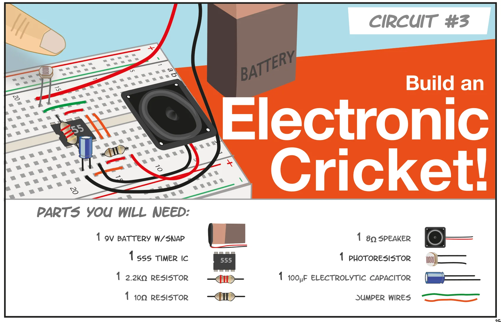
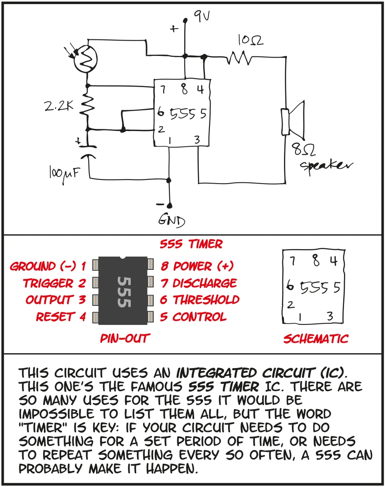
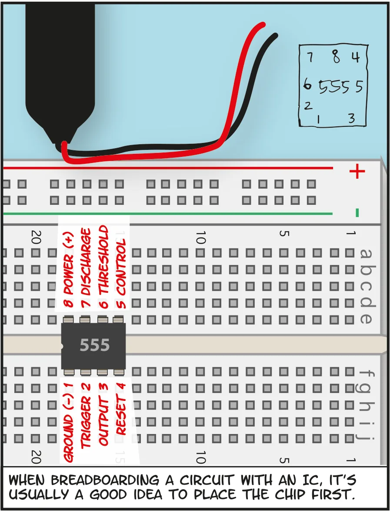
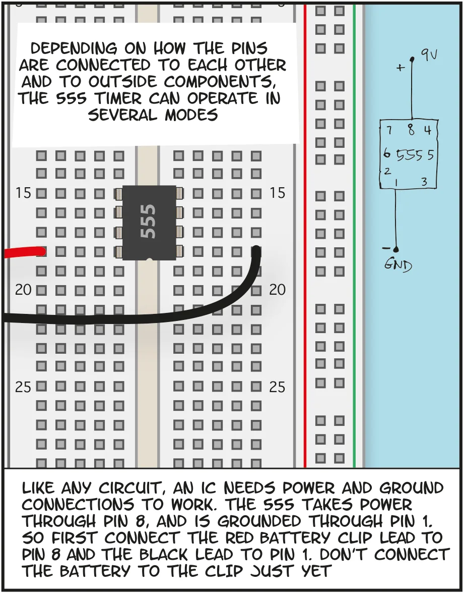
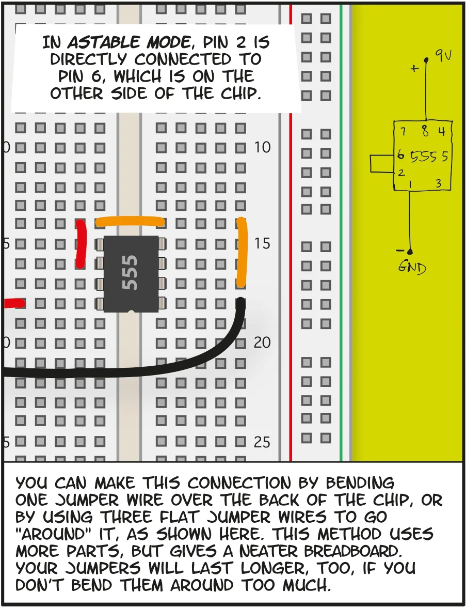
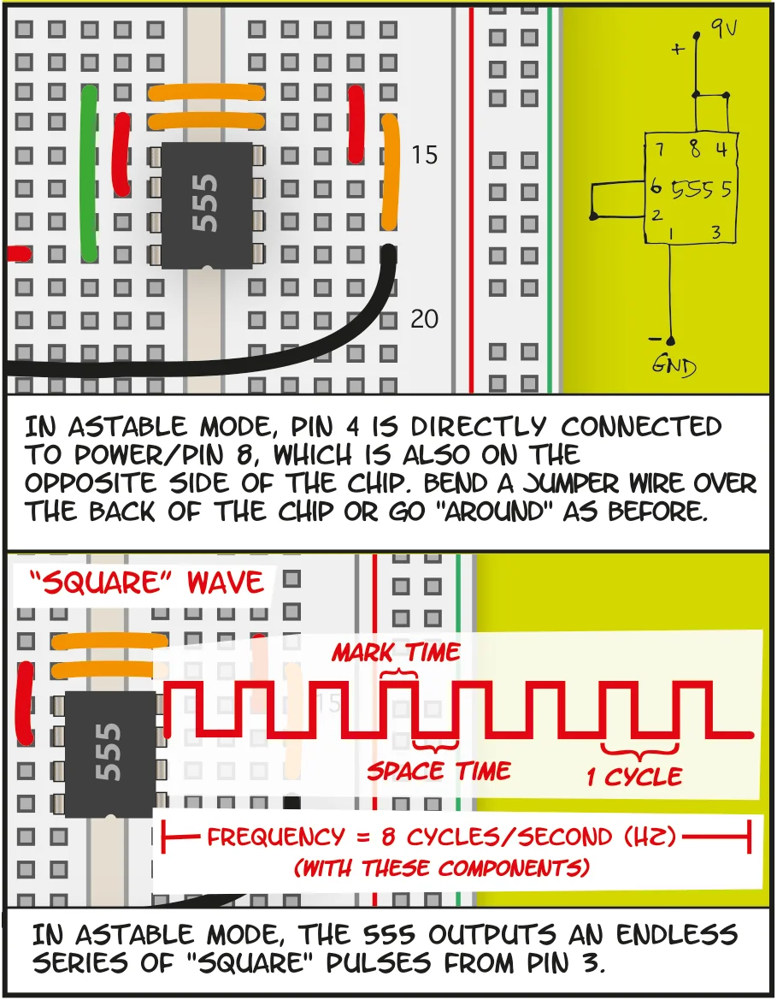
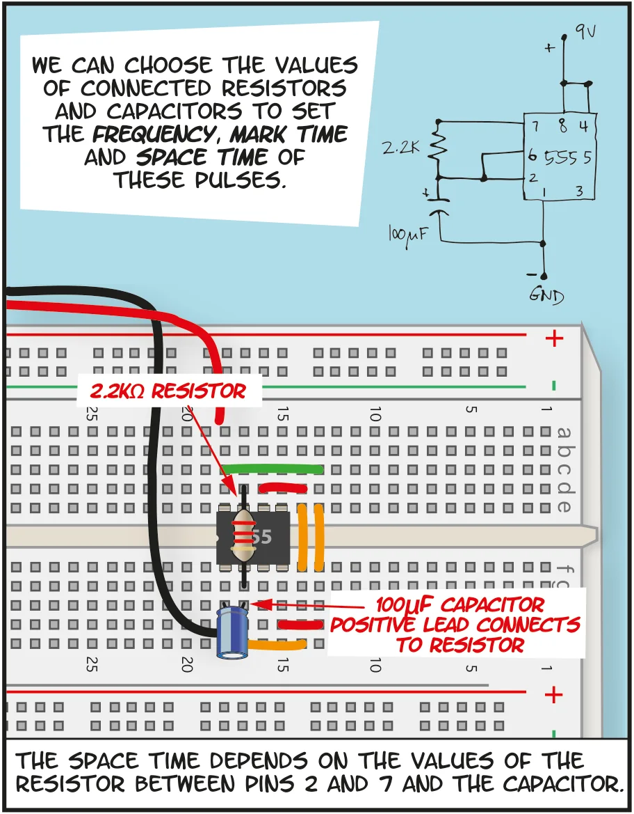
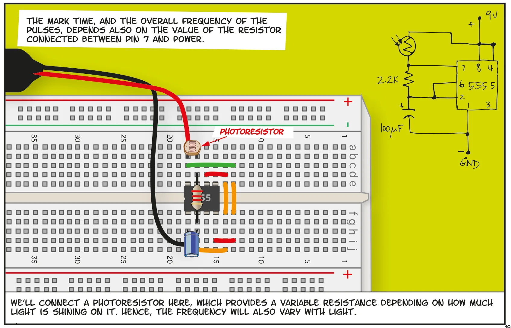
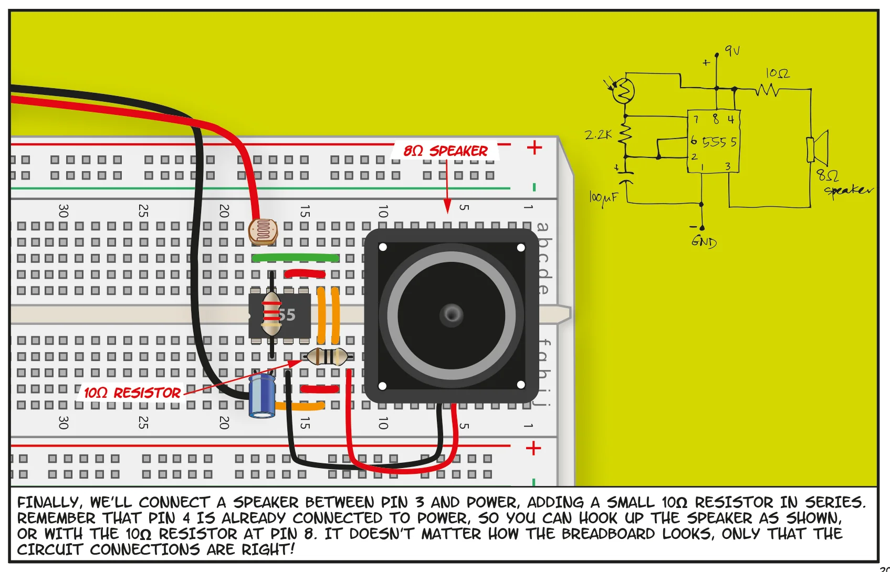
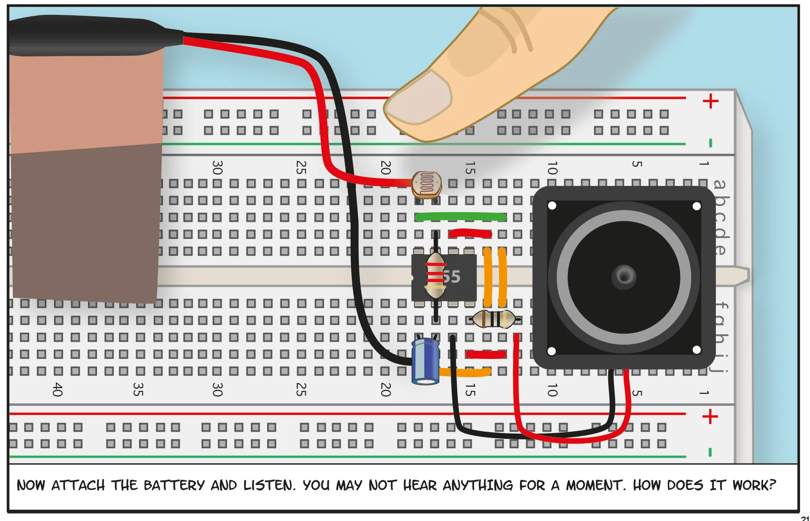

This circuit uses an integrated circuit (IC). This one's the famous 555 timer IC. There are so many uses for the 555 it would be impossible to list them all, but the word "timer" is key: if your circuit needs to do something for a set period of time, or needs to repeat something every so often, a 555 can probably make it happen.

When breadboarding a circuit with an IC, it’s usually a good idea to place the chip first.

Depending on how the pins are connected to each other and to outside components, the 555 timer can operate in several modes
Like any circuit, an IC needs power and ground connections to work. The 555 takes power through pin 8, and is grounded through pin 1. So first connect the red battery clip lead to pin 8 and the black lead to pin 1. Don’t connect the battery to the clip just yet

In astable mode, pin 2 is directly connected to pin 6, which is on the other side of the chip.
You can make this connection by bending one jumper wire over the back of the chip, or by using three flat jumper wires to go "around" it, as shown here. This method uses more parts, but gives a neater breadboard. Your jumpers will last longer, too, if you don't bend them around too much.

In astable mode, pin 4 is directly connected to power/pin 8, which is also on the opposite side of the chip. Bend a jumper wire over the back of the chip or go "around" as before.
In astable mode, the 555 outputs an endless series of "square" pulses from pin 3.

We can choose the values of connected resistors and capacitors to set the frequency, mark time and space time of these pulses.
The space time depends on the values of the resistor between pins 2 and 7 and the capacitor.

The mark time, and the overall frequency of the pulses, depends also on the value of the resistor connected between pin 7 and power.
We'll connect a photoresistor here, which provides a variable resistance depending on how much light is shining on it. Hence, the frequency will also vary with light.

Finally, we’ll connect a speaker between pin 3 and power, adding a small 10Ω resistor in series. Remember that pin 4 is already connected to power, so you can hook up the speaker as shown, or with the 10Ω resistor at pin 8. It doesn’t matter how the breadboard looks, only that the circuit connections are right!

Now attach the battery and listen. You may not hear anything for a moment. How does it work?